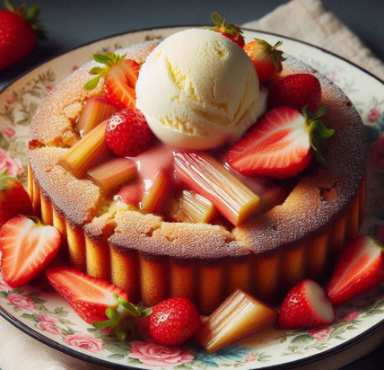

Cihans Kitchen
Rhabarberkuchen

Zutaten
Für den Teig:
125 g Butter (zimmerwarm)
Für die Füllung:
500 g frischer Rhabarber, gereinigt und in Stücke geschnitten
100 g Zucker (nach Geschmack)
1 Esslöffel Speisestärke (optional)
Für die Dekoration
Puderzucker (nach Geschmack)
Zubereitung
-
Teig Zubereiten:
In einer Rührschüssel die Butter und den Zucker cremig schlagen.
Das Ei hinzufügen und weiter rühren.
Mehl, Backpulver und Salz hinzufügen. Den Teig gut kneten.
Den Teig in eine mit Backpapier ausgelegte Backform drücken und einen Rand formen. Den Teig 30 Minuten im Kühlschrank ruhen lassen.
-
Füllung Zubereiten:
Die geschnittenen Rhabarberstücke in einer Schüssel mit Zucker und Vanillezucker vermischen. Optional können Sie auch Speisestärke hinzufügen, um die Füllung etwas fester zu machen.
-
Kuchen Backen:
Den Ofen auf 180 °C vorheizen.
Die Rhabarberfüllung gleichmäßig auf den gekühlten Teig verteilen.
Den Kuchen im vorgeheizten Ofen etwa 30-40 Minuten backen, bis die Oberfläche goldbraun ist.
-
Servieren:
Den Kuchen abkühlen lassen, in Stücke schneiden und nach Belieben mit Puderzucker bestreuen.
-
Guten Appetit! Dieser leckere Rhabarberkuchen ist eine wunderbare Ergänzung zu Ihren Kaffeepausen oder als süßer Snack.